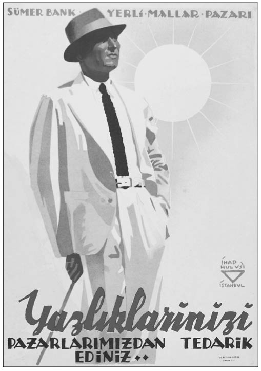

S-Ş
Sattırmam Kardeşim (Halkçı Parti lideri Necdet Calp’in unutulmaz sözü): Dönemin ANAP lideri Turgut Özal’ın akılda kalan ilk polemiği, bir televizyon programında Calp ile giriştiği, “Satarım Sattırmam” polemiği oldu. 1983 Genel Seçimleri öncesi, Turgut Özal, Turgut Su-nalp ve Necdet Calp arasında yaşanan açık oturumun birinde “Boğaz Köprüsü” gibi kamuya ait mülklerin halka açılması gündeme geldi. Turgut Özal, iktidara geldiği takdirde Boğaz Köprüsü’nün hisselerini halka satacağının sözünü verirken, Necdet Calp de, ne olursa olsun böyle bir şeye asla izin vermeyeceğini belirterek, “Sattırmam efendim” diyerek, karşı çıkıyordu. Hatta o günlerde birçok magazin ve mizah dergisine de konu olarak, gündemden uzun süre düşmedi. ANAP iktidarıyla birlikte, köprü, baraj, enerji santralleri gibi tesislerin satışına ilişkin yasa Meclis’te sert tartışmalara neden olurken, yasa tasarısı daha sonra kanunlaştı. Kanun çıkmasının ardında da tartışmaların sonu gelmedi. Köprü ve barajların satılması konusunda DYP Genel Başkanı Yıldırım Avcı, “Mirasyediler her şeyi satarlar” derken, HP Genel Başkanı Necdet Calp, “Ermeni terör örgütü ASALA almak istese verilecek mi?” diye sitemde bulunuyordu. SODEP Genel Başkanı Erdal İnönü ise “Devlet malını satmaya kimsenin gücünün yetmeyeceğini” söylüyordu. 1984’ün Aralık ayında ise, Boğaziçi Köprüsü’nün 10 milyar değerindeki gelir ortaklığı senetleri İş Bankası aracılığıyla satışa çıkarıldı. Köprü senetleri kapışılırken bu satış işlemini geçiş ücretlerine yapılan zam haberi izledi.
Savaş Vurguncuları (İkinci Dünya Savaşı dönemindeki vurguncuların genel adı): İkinci Dünya Sava-şı’nın devam ettiği günlerde Türkiye’de, sıkıntılı günler yaşanıyordu. Savaş öncesi ekonomik kalkınmaya ayrılan ve zaten sınırlı olan kaynaklar, savaş yıllarında savunma giderlerine ayrılmaya başlanınca yatırımlar durma noktasına geldi. İthalata getirilen sınırlama ile tüketim mallarında başlayan sıkıntılar nedeniyle, zorunlu olarak tüketim malları üretimine yöneliş oldu. Hızlı enflasyon ve kıtlık nedeniyle halkın yaşam koşulları oldukça güçleşti. Karne uygulamasıyla zorunlu tüketim malları devlet kontrolünde insanlara ulaştırılmaya çalışılıyordu. Millî Koruma Kanunu ve diğer önlemler bile fiyatlardaki artışı engelleye-miyordu. Bu koşullar o dönemde “savaş vurguncuları” diye anılan yeni zenginlerin türemesine neden olmuştu. Önemli bir sermaye birikimi sağlayan tüccar ve büyük toprak sahipleri için, hızlı enflasyon ve kıtlıklar yaşanan bu dönemde vurgunculuk çok önem kazanmıştı. Böylelikle savaş vurguncularının sermaye birikimi sanayiye yönelmek yerine daha kazançlı olan ticarette kalmıştı.
Savaş zamanı vurgunculuğu, özel sektöre güvenilme-yeceğinin genel bir kanıtı olarak gösteriliyordu. Gazete manşetlerinde vurgun iddialarının yer almadığı tek bir gün yok gibiydi. En çok suçlananların başında ise, devlet memurluğu yaptıktan sonra iş dünyasına geçenler yer alıyordu. Öyle ki, 1945 Bütçesi Meclis’te tartışılırken bazı milletvekilleri, politikacı ve devlet memurlarıyla işadamları arasındaki gizli ilişkileri soruşturmak üzere, 1920’lerde kurulan İstiklal Mahkemeleri’ne benzer özel mahkemelerin kurulmasını istemişlerdi. Savaş yıllarında İstanbul’da yüzlerce “milyoner” doğmuştu. Bunlardan bir kısmı Anadolu’dan İstanbul’a yönelen yeni zenginlerdi. Savaş zenginlerinden, meşhur “Hacı Ağa” tiplemesi o günlerin Türkiye’ye armağanıydı. Hacı Ağa tipleri, Varlık Vergisi uygulamasından sonra yıkılan İstanbul tüccar gruplarının yerine geçme eğilimindeydi. İstanbul’daki Anadolu burjuvazisi, eski ve dokunulmaz mevkilere el atarak İstanbul burjuvazisini tedirgin ediyordu. Hüseyin Avni, Yurt ve Dünya dergisinin Temmuz 1943 sayısında gözlemlerini şöyle aktarıyordu:
“Kasaba tüccarı ve zengin köylüyü eğlendirmek için çalgılı gazinolar çoğalmıştır. Bu gazinolarda ekseriyetle Anadolu şarkıları söylenmekte, köylü kıyafetine girmiş kadın artistler Konya’nın kaşık havasını taklit ederek rumba ile karışık oyunlar oynamaktadırlar.”
Sevda Tepesi (İstanbul’da Araplara satılan tepe): Boğaziçi’nde Kandilli sırtlarındaki Sevda Tepesi’nin, 1985’te Suudi Arabistan Prensi Abdullah Bin Abdülaziz’e satılması sorun yarattı. Turgut Özal, Arap sermayesini Türkiye’ye çekmek istiyordu. 1984’te Özal, önce Suudi Arabistan Veliahtı Prens Abdullah bin Abdülaziz’e Sevda Tepesi’ni gezdirerek, araziyi satın almaya razı etti. Prens’in satın alma teklifi, arazinin sahibi Dirvana Ailesine, bizzat devlet kanalıyla iletildi. Türk basını ise bu dönem, Araplara arsa satılması girişimini eleştiriyordu. Suudi Prens’e arsa satma konusunda kararlı bir tavır takınan Başbakan Özal ise Prens’in Boğaz’da, saray değil 1000 metrekarelik bir ev yapacağını açıklıyordu. “Adamlara gel Boğaz’da yer al diye biz teklif ettik” diyen Özal, konunun hukuk devletiyle ilgisinin olmadığına inanıyordu. Ona göre, Arapların Boğaz’da yer almalarından sonra başka yabancılar da Boğaz’da yer alabilirlerdi. Dirvana Ailesi, imarsız arazilerini Prens’e satmaya karar verdi, ancak Suudi Prens’in arazinin sahibi olmasının önünde bir engel daha vardı. “Karşılıklılık ilkesi” gereği, Suudi Arabistan ile Türkiye Cumhuriyeti arasında gayrimenkul alım satımı yapılamıyordu. Özal, kolları sıvayarak Bakanlar Kurulu kararıyla, 1984’te Prens’in arazinin sahibi olmasını sağladı. Bu satıştan sonra Cidde Belediye Başkanı Farisi de Kandilli kıyısında yer almak için girişimde bulundu. Satış işleminden sonra, İmar Yasası’na eklenen meşhur 47. maddeyle Boğaziçi öngörünüm bölgesinde olan ve 5 bin metrekarenin üzerindeki arazilere yüzde 6 oranında imar izni verildi. Ancak bu değişikliği Anayasa Mahkemesi iptal edince Sevda Tepesi de Bin Abdülaziz’in elinde kaldı.
Sırtımızdaki Kambur: (Bkz. KİT’lerin Zararları).
Siyasetin Ticarete Alet Edilmesi (Ticaretin olağan akışına siyasi ilişkilerin bulaştırılması): Tek parti dönemindeki rüşvet olayları, İsmet Paşa’nın ifadesiyle “siyaseti ticarete alet etmek” türündendi ve bunun altında da Cumhuriyet yönetiminin “devlet eliyle ferdi zengin etmek” politikası yatıyordu. Bu dönemde daha çok resmî ideoloji, bürokrasi ve iş dünyası arasındaki organik bağların kurulmasında payanda görevi görmüş ve yeni kurulan siyasi rejimin temellerinden biri olan sermaye sınıfını güçlendirmenin aracı olarak kullanılmıştı. Başbakan İnönü ve arkadaşları, devlet nüfuzunu kullanarak banka ve şahıslara ait çeşitli işler yapılmasını eleştiriyordu. İnönü’nün, konuyla ilgili düşünceleri çok netti:
“Bir iş ki, kimse yapmaz, devlet yapar, bunu anlıyorum. Bir iş ki, hususi bir teşebbüs yapar, bunu da anlıyorum. Fakat devletin nüfuzunu kullanarak şahıslar ve bankalar yapar, bunu anlamıyorum. Ben devletçilik denen şeyi anlarım, fakat dolapçılığı anlamam”.
Celal Bayar, Mustafa Kemal’in dahi dar devletçilik düşüncesinden ileriye doğru bir kopuşu gerçekleştirdiğini, buna karşılık İsmet İnönü’nün düşüncelerinde en ufak bir değişiklik olmadığını düşünüyordu. İnönü ise İş Bankası ekibinin “siyaseti ticarete alet ettiği”ne inanıyordu. Bayar, bu ekibi İş Bankası yönetiminden alarak Denizbank’ın başına getirmişti. Fakat İnönü Cumhurbaşkanı olur olmaz hiç hazzetmediği bu ekibi tasfiye etti.
Sümerbank Modeli (Türkiye’yi sanayileştiren modelin yok oluşunun canlı örneği): Cumhuriyet’in ilk yıllarında kurulan bazı fabrika, işletme ve mağazaların bütünü Sümerbank’ı oluşturdu. Bu, “ithal ikame” yaklaşımıyla ülkeyi kuran kuşakların yoksulluğun yakıcılığına buldukları ilk çözümdü. Bugün, Mustafa Kemal ve arkadaşlarının 1930’lu yıllarda başlatmış olduğu büyük kalkınma hareketinin uygulayıcısı olan Sümerbank’ın fabrikalarının çoğu kapandı. Ondan geriye sadece, 70 yıllık bir sanayi kültürü kaldı. Sümerbank, fabrikasıyla, işletmesiyle, mağazasıyla, sosyal ve spor tesisleriyle uygarlık anlayışını Anadolu’ya taşıdı. Büyük umutlarla kurulan, Cumhu-riyet’in ilk büyük kalkınma hamlesi; adam kayırma, men-faatçilik ve partizanlık gibi nedenlerle amacına ulaşamadı. Bunun yanı sıra zamanında özel kesime devredilmediği ya da teknolojisini yenilemediği için devlet fabrikaları, zarar ettirilerek, ya birer ikişer kapanmak ya da devredilmek zorunda kaldı. 1990’lı yıllarda özelleştirme kapsamına alınan Sümerbank’ın mevcut birikimlerinin bir kısmı da kelimenin tam anlamıyla talan edildi.

Ülkenin kısa sürede sanayi ülkesi olması yolunda yeni bir model olan Sümerbank, sanayide devletçiliğin en önemli kurumlarından biri olarak kendisinden sonra gelişen ekonomik büyümenin mimarı oldu.
Şakir Zümre (Devletin sahip çıkamadığı bir girişimci): Cumhuriyet’in ilk yıllarında, özel sektörün karşılaştığı en önemli sorunlar, sermaye yetersizliği ve sanayi kredisinin bulunmayışıydı. Ayrıca hammaddenin temini ve kalifiye eleman eksikliği, Türk özel sektör şirketlerinin en önemli sorunlarından birkaçıydı. Özel sektör küçüklü büyüklü bazı yatırımlar gerçekleştirdi. Fakat bu dönemde yapılan özel sektör yatırımlarının çoğu sorunlarla baş edilemediğinden günümüze kadar ayakta kalamadı. Bunlardan biri de Zümre’ye ait fabrikalardı. Fabrikaların kurucusu Şakir Zümre, Bulgaristan’daki Türkler içinde Avrupa’da eğitim görebilme olanağı bulan ilk Türk gençlerinden biriydi. I. Dünya Savaşı döneminde Varna Türk milletvekili olarak Bulgar Parlamentosu’nda da bulunan Zümre, o yıllarda Sofya’da görevli bulunan Türk Askerî Ataşe, Yarbay Mustafa Kemal Bey ile yakın arkadaşlık kurmuştu. Şakir Zümre ile Mustafa Kemal arasında Sofya’da başlayan yakın arkadaşlık ve dostluk, Türkiye’nin ulusal bağımsızlık savaşı yıllarında da artarak devam etti. Mareşal Fevzi Çakmak’ın da yakın akrabası olan Zümre, Anadolu’da bağımsızlık savaşı veren ulusal güçlere, yurt dışından silah ve cephane göndererek, “imalat-ı harbiye” konusunda uzman, usta ve teknisyen bularak hizmet etti. Uzun yıllar Türk ordusunun gereksinimi olan silah ve cephanelerin üretimini yapan Zümre, Büyük Zafer’den sonra Bulgaristan’dan ayrılarak Türkiye’ye geldi. Atatürk’ün uygun görmesiyle, Türkiye’nin savunma sanayiinde ilk özel sek
tör fabrikasını kurdu. 1924’te Zümre tarafından tamamı yerli sermayeyle Haliç kıyısında imalat-ı harbiye ve madeni eşya fabrikaları kuruldu. Bulgaristan’dan getirilen yabancı usta ve teknisyenler ile imalata başladı ve kısa bir süre sonra fabrikada yerli işçi ve usta yetiştirmeyi başarabildi. Fabrikanın çalışmaları daha sonraki yıllarda çok farklı alanlara yayıldı. Zümre’nin fabrikası, çeşitli ülkelerden sipariş alarak yurt dışına mal ihraç etti. İhracat yaptığı ülkeler arasında Yunanistan, Bulgaristan, Polonya ve Mısır gibi ülkeler bulunuyordu. Yunan ordusunun “bomba” gereksinimini karşılamak üzere 1937 Şubat’ında Yunanistan’la yapılan 1,5 milyon liralık “iş sözleşmesi”, Türkiye’de büyük bir ekonomik zafer olarak değerlendiriliyor ve gazetelerin birinci sayfalarında en önemli haberler arasında yer alıyordu. Türk savunma sanayii tarihinde önemli bir yeri olan Türkiye’nin özel sektöre ait silah ve cephane fabrikası, II. Dünya Savaşı yıllarında teknolojisini yeni-leyemedi. Savaşın bitmesi ve Türkiye’ye yapılan Amerikan silah yardımlarından sonra Şakir Zümre Fabrikası, üretimine son vermek zorunda kaldı.
Şimendifer Siyaseti (Cumhuriyet’in ilk yıllarında izlenen ve demiryolu yapılmasının gerekliliğini savunan politikanın adı): Demiryolları o dönem için “sihirli” bir sözcüktü. Hatta 10. Yıl Marşı’nın da dizelerinden biri olan “Demirağlarla ördük ana yurdu dört baştan” sözleri, bir dönemin sanayileşme politikasının da ne olduğunu gösterir. 1920’lerin en kapsamlı ve önemli ekonomik altyapı faaliyeti demiryollarının yapımı oldu. Bununla birlikte Cumhuriyet’in ilk şimendifer okulu 1923’te açıldı. İşletilenlerin yanı sıra 10 yılda yeni yapılan 1000 kilometre demiryolu, bir ekonomik politikanın ötesinde, modernleş-meci ve kalkınmacı Cumhuriyet aydınlanmasının en belirgin göstergesiydi. Misak-ı Millî sınırları içinde, Cumhuriyet fikrinin her alana ve yurdun dört bir köşesine yayılması, iç pazarın bütünleşmesi ve ticaret ürünlerinin rahatça dolaşımı ve buna bağlı olarak ekonominin canlanması o yıllar için ancak demiryoluyla mümkün olabilirdi.